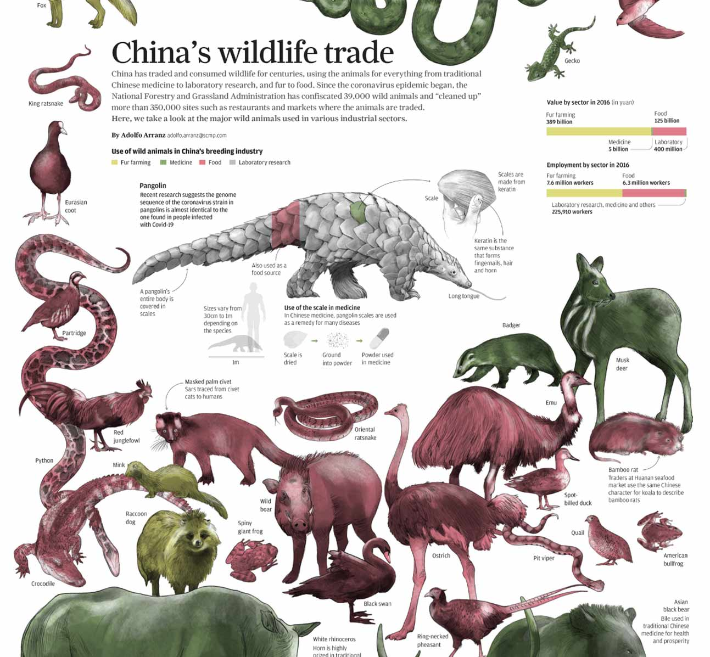
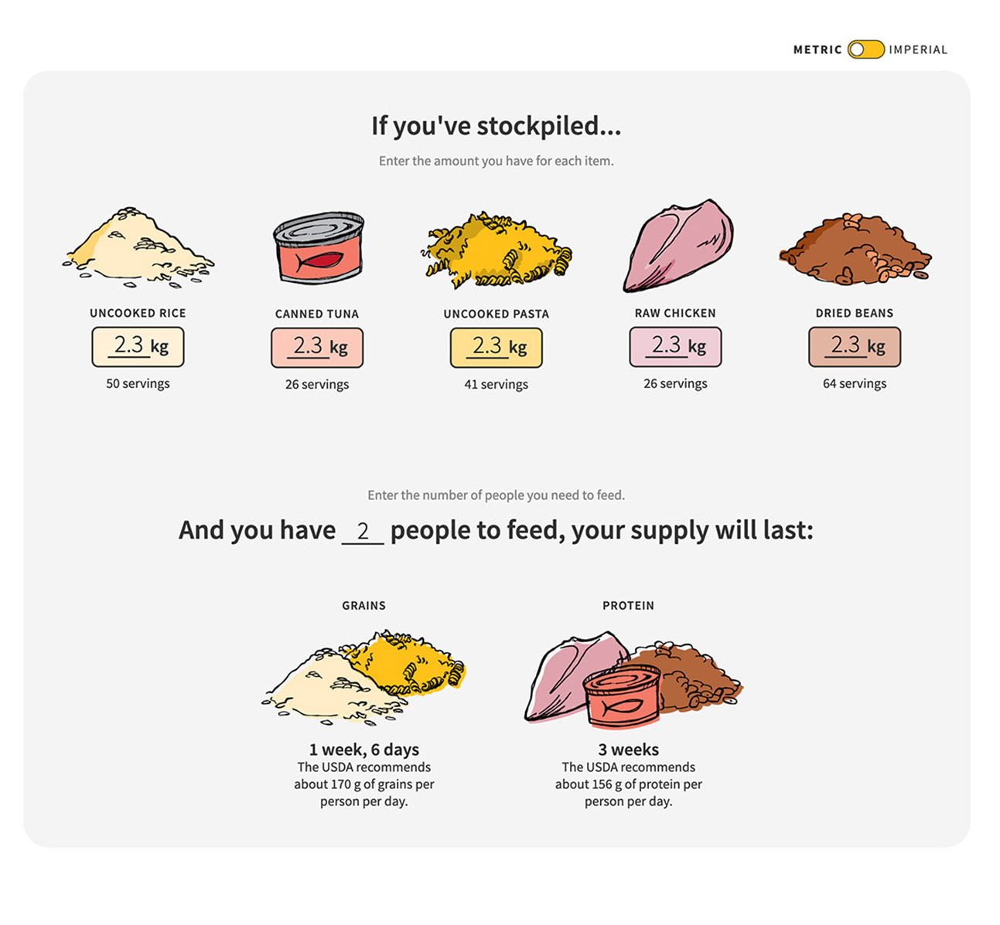
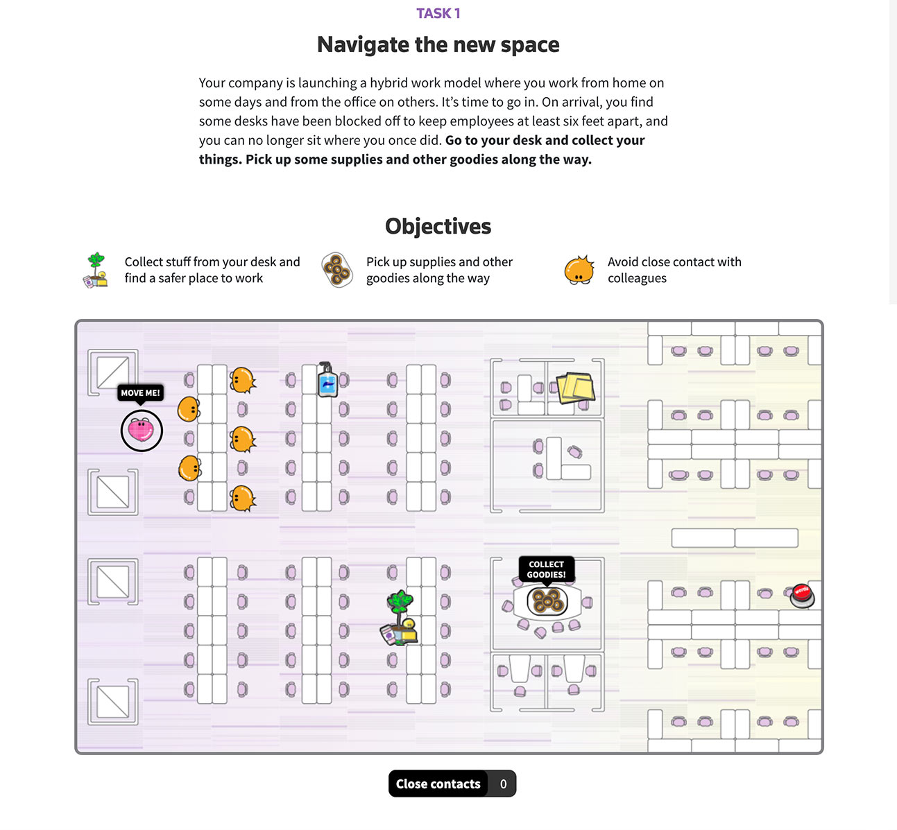
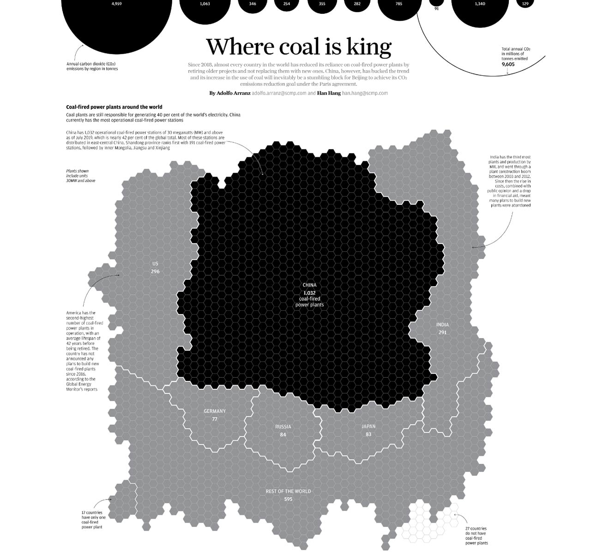
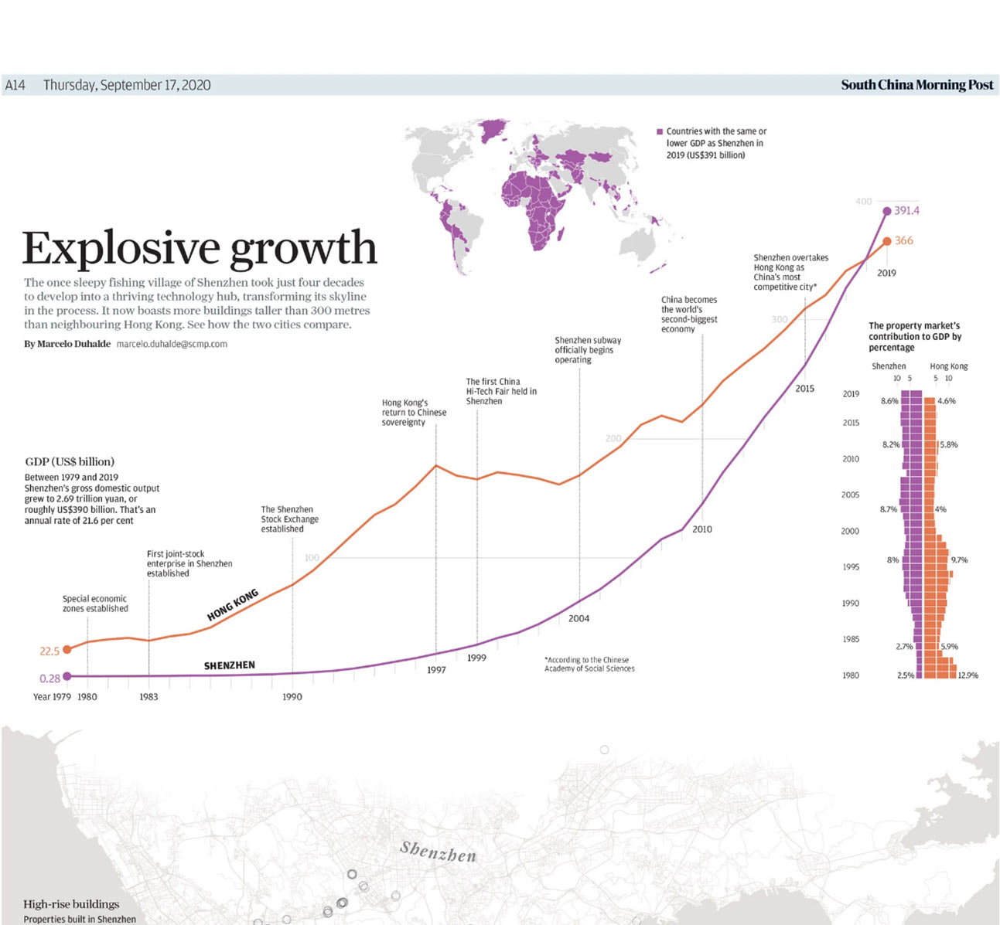
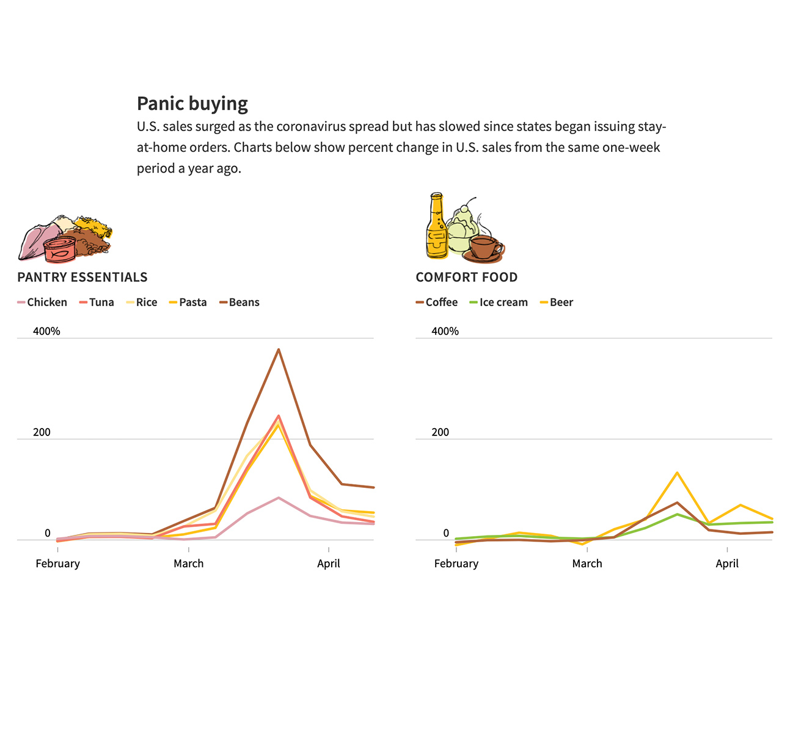
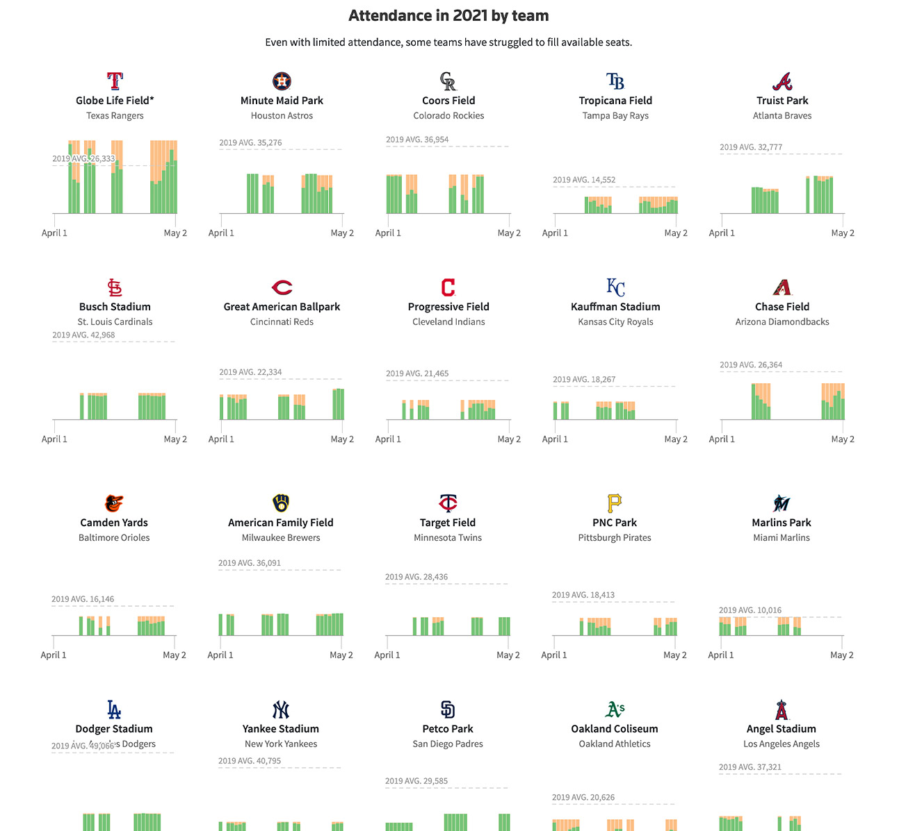

Información en gráficos figurativos
Perdidas para la posteridad
Publicado en South China Morning Post.

Mercado de animales silvestres en China
Publicado en South China Morning Post.

No acapares!
Publicado en Reuters Graphics.

Como será cuando regresemos a la oficina?
Publicado en Reuters Graphics.
Información en gráficos no figurativos

Donde el carbon es el rey
Publicado en South China Morning Post.

Crecimiento explosivo
Publicado en South China Morning Post.

No acapares!
Publicado en Reuters Graphics.

Regreso de pasatiempo
Publicado en Reuters Graphics.